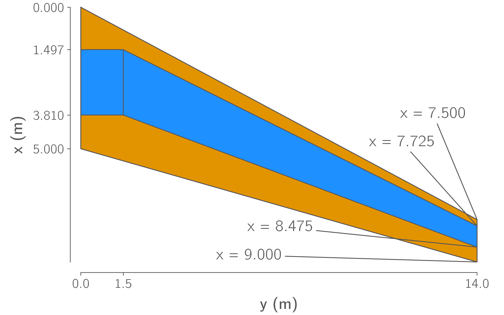
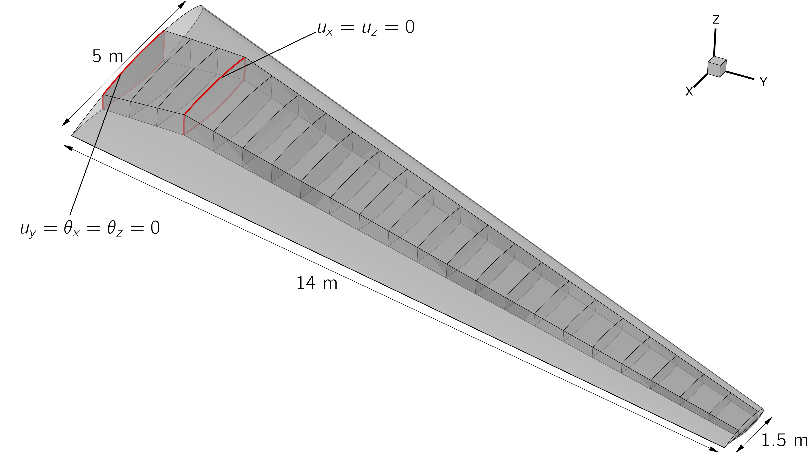
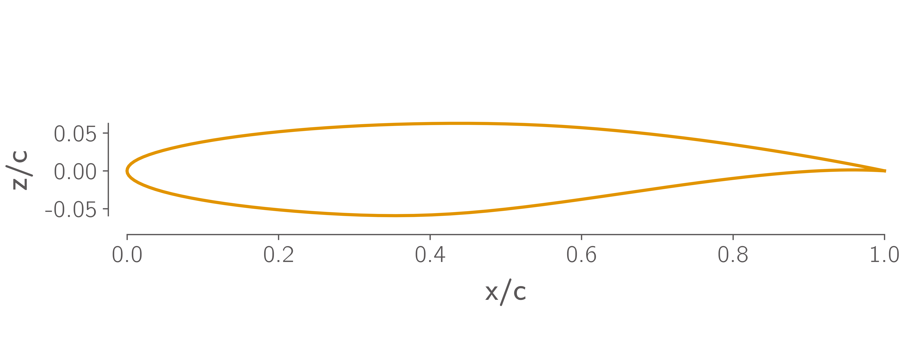
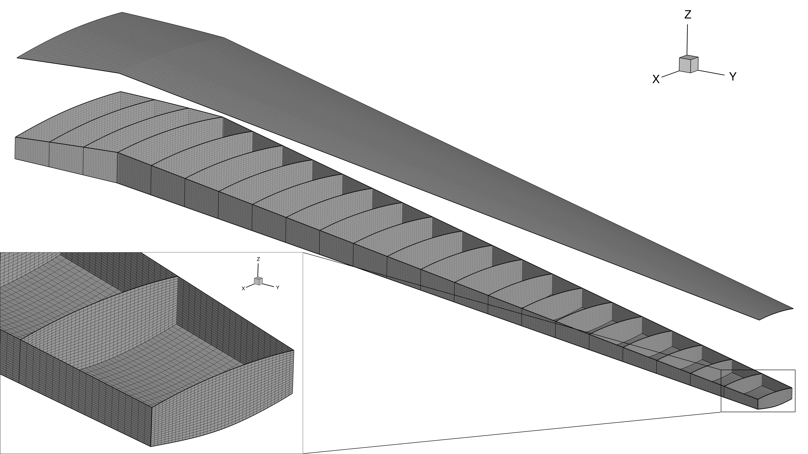

Wing Model¶
The benchmark model is based on an OML geometry originally defined by Kenway [Ken13], who referred to it is as the STW. In this document we simply refer to it as the wing or the benchmark model.
Wing Geometry¶
The wing geometry is shown in Fig. 1, Fig. 2 and Fig. 3. It has a simple trapezoidal planform, based on the Boeing 717, with a constant, untwisted RAE2822 cross-section, shown in Fig. 3. Note that this cross section cuts through the wing on planes normal to the global Y-axis, rather than normal the quarter-chord axis. The cross section extends out to the nominal semispan of \(14\,\text{m}\), beyond which a small rounded tip cap extends a further \(42.5\,\text{mm}\).
The wing contains a conformal wingbox with upper and lower skins, leading and trailing edge spars, and 23 ribs. The wingbox features a typical SOB break at a semispan of \(y = 1.5\,\text{m}\), inboard of which the wingbox is unswept, resembling a center-box. Outboard of the SOB, the wingbox extends from 15 to 65% of the chord. Four of the ribs are evenly spaced between the centerline and the SOB, the remaining ribs are evenly spaced between the SOB and the tip. The wingbox is subject to symmetry conditions at the centerline and is fixed in the chordwise and vertical directions at the SOB as shown in Fig. 2.
CAD files of both the wing OML and wingbox geometries are provided in the repository.

Fig. 1 Wing Planform¶

Fig. 2 Wing OML and wingbox, boundary conditions are applied to the wingbox at the side-of-body junction and symmetry plane¶

Fig. 3 RAE2822 airfoil section¶
Aerodynamic Model¶
A family of 3 structured multiblock CFD meshes for the wing are provided in the repository, which are summarized in Table 1. The finest mesh (L1) is intended only for mesh convergence and analysis studies, the L2 mesh is intended for final optimizations, and the L3 mesh for debugging. The coarser meshes are created by repeatedly coarsening the L0 surface mesh by a factor of 2 in each direction before extruding up to a distance of \(300\,\text{m}\) from the wing surface. The advantage of this approach is that it results in higher quality volume meshes than simply coarsening the L1 volume mesh. The disadvantage is that it does not provide the parametrically-similar series of grids necessary for a mathematically rigorous convergence study [Vas11].
Use of these meshes is not required. Participants are encouraged to submit results using meshes with topologies and sizes that are suitable for their CFD codes and available computational resources.
Mesh |
Cells |
First cell height (m) |
Target cruise \(y^{+}\) |
|---|---|---|---|
L1 |
\(7.8 \times 10^6\) |
\(3 \times 10^{-6}\) |
0.125-0.25 |
L2 |
\(9.7 \times 10^5\) |
\(6 \times 10^{-6}\) |
0.25-0.5 |
L3 |
\(1.8 \times 10^5\) |
\(1.2 \times 10^{-5}\) |
0.5-1 |
Structural Model¶
A series of shell FE meshes of the wingbox are also provided in the repository in BDF format. These are summarized in Table 2 and consist of 4-node quad elements. Equivalent meshes with higher order 9 and 16-node quad elements are also available in the repository however, these element types are not widely supported by commercial FE codes.
|
Elements between ribs |
Elements between spars |
Elements between skins |
Total Elements |
Total DOF |
|---|---|---|---|---|---|
L1 |
20 |
40 |
20 |
71,200 |
419,778 |
L2 |
10 |
20 |
10 |
17,800 |
103,158 |
L3 |
5 |
10 |
5 |
4,450 |
24,948 |
L4 |
3 |
5 |
3 |
1,401 |
7,536 |

Fig. 4 The finest wingbox mesh contains 71,200 quadrilateral elements and 419,778 DOF.¶
To test the modeling capabilities relevant for analysis of modern aircraft structures, the wingbox is assumed to be made of stiffened composite panels. The stiffeners are assumed to have a T-shaped cross section, as shown in Fig. 5. The composite ply properties used throughout the wingbox are shown in Table 3, taken from Brooks et al. [BMK20]. Both the shell and stiffeners in every panel of the wingbox are assumed to consist of a [\(0^{\circ}\), \(-45^{\circ}\), \(45^{\circ}\), \(90^{\circ}\)] layup. Different layups of these plies are used for different components in the wingbox based on values used by Dillinger [Dil14]. In the upper and lower skin shells and in all stiffeners, we assume a \(0^{\circ}\) biased layup with ply fractions of [44.41%, 22.2%, 22.2%, 11.19%], while in the spar and rib shells we use a more isotropic [10%, 35%, 35%, 20%]. In the skins, the stiffeners and \(0^{\circ}\) plies are aligned with the trailing edge spar, in the spars and ribs they are vertically oriented.
Fig. 5 Cross section of the panel¶
There are a wide variety of approaches to modeling stiffened shells in FE models and predicting their failure, particularly in the context of optimization. We therefore do not believe it is practical to enforce a single approach. However, the models used by participants should:
Be able to model the anisotropic composite laminate properties given above.
Be able to model the presence of panel stiffeners and, ideally, be able to parameterize their cross-section.
Use sufficient failure criteria to constrain that the structure has a safety factor of at least 1.5 to both material and buckling failure.
Property |
Description |
Value |
|---|---|---|
\(E_{11}\) |
Fiber direction modulus |
\(117.7\,\text{GPa}\) |
\(E_{22}\) |
Transverse modulus |
\(9.7\,\text{GPa}\) |
\(G_{12}\) |
In-plane shear modulus |
\(4.8\,\text{GPa}\) |
\(G_{13}\) |
Transverse shear modulus |
\(4.8\,\text{GPa}\) |
\(G_{23}\) |
Transverse shear modulus |
\(4.8\,\text{GPa}\) |
\(T_{1}\) |
Fiber direction tensile strength |
\(1648\,\text{MPa}\) |
\(C_{1}\) |
Fiber direction compressive strength |
\(1034\,\text{MPa}\) |
\(T_{2}\) |
Transverse tensile strength |
\(64\,\text{MPa}\) |
\(C_{2}\) |
Transverse compressive strength |
\(228\,\text{MPa}\) |
\(S_{12}\) |
Shear strength |
\(71\,\text{MPa}\) |
\(\nu_{12}\) |
Major Poisson’s ratio |
\(0.35\) |
\(\rho\) |
Density |
\(1550\,\text{kg}/\text{m}^3\) |
In all flight conditions, the structural model is subject to aerodynamic forces and the wingbox’s self-weight. For the sake of simplicity, we do not include any inertial forces due to non-structural masses such as fuel, or leading and trailing edge devices. Although such loads are simple enough to include in a standalone analysis, they are difficult to include in an optimization problem due to the need to keep them consistent with the wing’s geometry as it changes.
Bibliography¶
Timothy R. Brooks, Joaquim R. R. A. Martins, and Graeme J. Kennedy. Aerostructural trade-offs for tow-steered composite wings. Journal of Aircraft, 57(5):787–799, September 2020. doi:10.2514/1.C035699.
Johannes K. S. Dillinger. Static Aeroelastic Optimization of Composite Wings with Variable Stiffness Laminates. PhD thesis, TU Delft, 2014. doi:10.4233/uuid:20484651-fd5d-49f2-9c56-355bc680f2b7.
Gaetan K. W. Kenway. A Scalable, Parallel Approach for Multi-Point, High-Fidelity Aerostructural Optimization of Aircraft Configurations. PhD thesis, University of Toronto, 2013.
John Vassberg. A unified baseline grid about the Common Research Model wing/body for the Fifth AIAA CFD Drag Prediction Workshop (invited). In 29th AIAA Applied Aerodynamics Conference. Jul 2011. doi:10.2514/6.2011-3508.